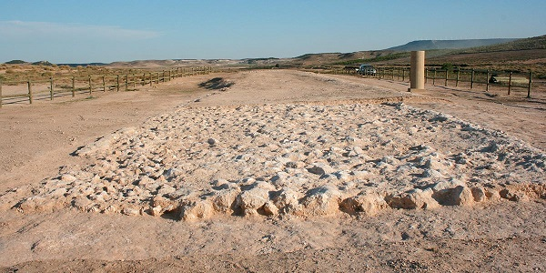
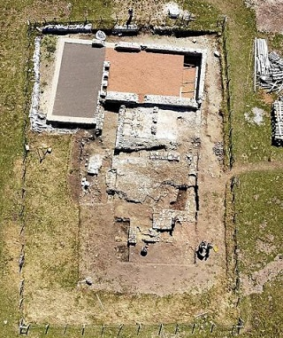
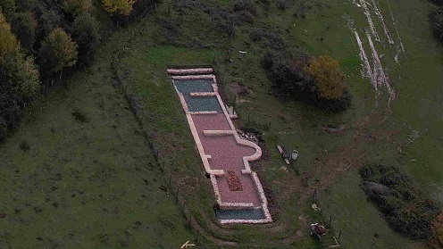

|
La ciudad romana de Andelos se
localiza en el término municipal de
Mendigorría,
en la Navarra Media.
También destacan las ruinas romanas de
Santacara.
El yacimiento de Cara. Citados por Plinio. La ciudad que es nombrada en
las fuentes como Cara, Kara, Carta. Fue un poblado fundado alrededor del
siglo I a.e.c. con el motivo de las Campañas Sertorianas.
En 1995 en el término de
Eslava se hallaron los restos de la
ciudad romana de Santa Criz. Vivió su máximo esplendor entre los
siglos I y II. La monumentalidad y abundancia de los restos encontrados
hacen pensar que se trataba de una gran ciudad.
En Tudela destaca la villa
romana de Ramalete, fue una de las mayores villas del bajo imperio del
norte peninsular. Construida en el s. IV, conservaba varios
mosaicos de la época. Además, en ella se han encontrado los restos de
unas termas, pinturas en las paredes, varios restos de cerámica del tipo
terra sigillata y utensilios de hierro. Estos mosaicos se pueden visitar
actualmente en el Museo de Navarra y en el Museo Arqueológico Nacional.
En
Arellano
destaca su villa romana de los
siglos I-V. "Aurelianum". El lugar es también conocido como "Villa de
las Musas" por el hallazgo del espectacular mosaico romano de "las
Musas".
En Liédena junto al río Irati se localizan los restos de una villa romana
datada en los siglos II-IV. También se interpreta como especie de
"hotel" asociado a la calzada romana, que unía Pompaelo con
Caesaraugusta, que servia de posta de caballos y descanso. Con más de 50
dependencias entre las que se incluían un trujal, un lagar, termas, la
vivienda señorial y la de los sirvientes. Y todo esto en torno a un
patio central. Hay huellas de un incendio que hacen sospechar que la
villa pudo ser destruida en el siglo II y reconstruida después. Es en el
siglo IV alcanzaría todo su esplendor. Un verdadero ejemplo de
autoabastecimiento: cultivaban cereales, vid, olivo, hacían su pan, su
vino y su aceite, tenían su propio ganado.....Los restos de mosaicos y
diversos hallazgos se conservan en el museo de Navarra.
En San Martín de Unx se
han hallado hachas pulimentadas de la Edad del Bronce y un fragmento de
estela funeraria de época romana.
La calzada y villa romana de Ablitas.
El área interpretativa protege un tramo de Calzada romana de 200 metros
de longitud y está protegida por un vallado rústico. Se conserva en un
excelente estado. La Vía de Hispania a Italia. En concreto su trazado
era desde Tarraco (Tarragona) hasta Asturica Augusta (Astorga y León),
pasando por Caesaraugusta (Zaragoza) y por aquí. el tramo, corresponde a
la etapa que discurría entre Belsinone (Mallén) y Cascantum (Cascante).
Teniendo una distancia en torno a los 30 kms.
La villa romana de Ablitas data del siglo I, con una zona de residencia
del dueño, zona termal, dependencias para el servicio, zona de
elaboración y almacenaje de aceite y vino, y establos. Su superficie
total podría rondar los 3.000 m2. En agosto de 2023, descubren en
Ablitas las termas romanas privadas más completas de Navarra. Este
recinto, de 90 metros cuadrados y datado entre los siglos III y IV,
cuenta con tres bañeras de agua para distintas temperaturas, sauna,
vestuario y letrina. Foto:
https://www.plazanueva.com

También destacamos los yacimientos romanos de San Esteban y Los Villares
en Falces, atestiguan la presencia de población en el siglo II.
En Aibar, en los lugares
llamados El Llano y en Soreta, existen restos de población romana.
En Oteiza existen una
serie de inscripciones romanas con referencias a bandidos de la zona y
un miliario romano procedente de los alrededores de la ermita de San
Tirso.
En Mues descubren los
restos de una presa romana que podrían datar del siglo I, excelentemente
conservada, cerca del río Odrón.
En
Olite destaca el recinto amurallado
romano mejor conservado de Navarra.
En Cascante se localizan
tres yacimientos al aire libre del Eneolítico-Bronce, uno de ellos en el
lugar de los Pedreñales. Donde se asienta la ciudad actual se hallaba
Cascantum, mansión de la vía que unía Tarragona con Astorga. Ciudad
Celtíbera devastada por Sertorio (76 a.e.c). En las excavaciones de 1970
se halló una vivienda con rico pavimento y paredes estucadas datada en
el año 70 a.e.c. Tuvo una importante ceca; en las monedas con carácter
ibérico consta con el nombre de Caiscata, y en las romanas tiene en el
reverso la figura de un toro, con la leyenda de Municipium Cascantum. En
diversos lugares del término se han hallado otros restos de la época
tardorromana.
En Berbizana se localiza el yacimiento arqueológico de Las Eretas.
Data de los siglos VI-V a.e.c. Poblado fortificado entre los que se
encuentran una muralla, un torreón y una vivienda.
En septiembre de 2017, aparecen
restos de una villa romana del siglo II cerca de Ribaforada. Se
trata del sistema de calefacción de la residencia pero no se descarta
que haya zonas de más valor.
En agosto de 2020, el Gobierno de
Navarra ha declarado bien de interés cultural la zona arqueológica de
época romana de Zaldua. Ubicada en los términos municipales de
Auritz/Burguete y Aurizberri/Espinal (Erro). El conjunto comprende dos
áreas de asentamiento, dos necrópolis y un tramo de calzada. Las termas
romanas de Zaldua. Foto: Gobierno de Navarra.

El yacimiento de Arce en
Artzibar. El yacimiento está formado por varios edificios, pero
destacan sus termas. La Sociedad de Ciencias Aranzadi trabaja en la
zona, junto a la calzada romana que atraviesa los Pirineos occidentales.
En abril de 2021, en Peralta,
aparecen los restos de unos mosaicos de grandes dimensiones. Una área de
unos 400 metros cuadrados, fruto de la cual se han descubierto
parcialmente los restos de un asentamiento rural de época romana de los
siglos III-IV, cuyas características y extensión se desconocían. En el
yacimiento destaca un edificio de notables dimensiones en el que se ha
centrado la actuación.
En Tafalla se hallaron
restos de una villa romana y de la Edad del Hierro. En agosto de 2022,
Un castillo romano obliga a modificar el paso del TAV en Tafalla. La
aparición del ‘castellum’ de la Gariposa condiciona unos 200 metros del
trazado del tren. El yacimiento de 9.068 metros cuadrados, de los que
3.000 están amurallados. Tiene un diseño casi octogonal, de planta
trapezoidal, y en él se identifican particularidades del sistema
defensivo y de las dependencias. Hay al menos una torre adosada al
flanco oeste y una torre interior integrada en la muralla, y dos zonas
claramente diferenciadas. Una norte, donde hay edificaciones –alguna de
planta rectangular–, con pavimentos, enlosados y basamentos de piedra; y
una sur, un área abierta sin construcciones internas.
Las termas romanas de Arce
de finales del siglo I a.e.c., junto a la calzada romana Iter XXXIV y
que atravesaba los Pirineos en la Antigüedad. Foto
navarra.com

Más info:
http://turismo.navarra.com/rutas-navarra/ruta-de-la-navarra-romana/
|